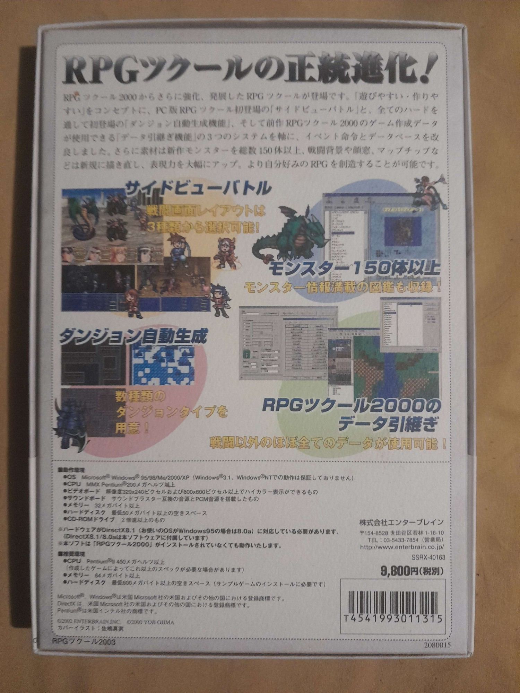

| About RPG Tsukuru 2003 |
|  Before you downloading you must know some things: the version is 1.00 the first release, it comes with a alpha version too so you can take a look in this too. So you can Download here: Internet Archive - RPG Maker 2003 if you try typing "RPG Maker 2003" very probably you will not find. Need to type in Katana (Japanese Alphabet) Download Instructions -----Windows----- Never tested the original version on windows but I think thar works if you install with administrative privilegies and run with the same and install the Japanese fonts(because it gives an error if you don't). If you not run with administrator you cannot create new projects nor export it. -----Linux----- On linux you need to convert the .img to iso using maybe bchunk (better you search on web a conversor), install so many Japanese fonts and run like root like this: sudo LANG="ja_JP.UTF-8" wine menu.exe. After install you can (run with root and "LANG") and developer your games.These are the instructions on the two main OS. |